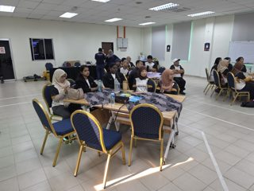

mbb55df68 · 20261127_091258.jpg
path 20261127_091258.jpg · sha256 ab29e02f416a345c… · source id 1hoGQDGIpQqR8hkv4R8Qa5tnXQzGqeYbA · modified 2026-11-27T03:10:18.869Z
probe {"kind": "photo", "w": 4000, "h": 3000, "taken": "2026:11:27 09:12:59", "luma_mean": 131.4}
quality {}
Frame index (every decoded frame: n, pts, scene score, luma, saturation): frames.jsonl.gz · contact sheet

Semantic notes cover not annotated yet; frame metadata is exhaustive.
Annotated moments
| t | shot | action | speaker | dialogue | emotion | quality | use |
|---|
Thumbnails

Transcript
machine transcript, verify names